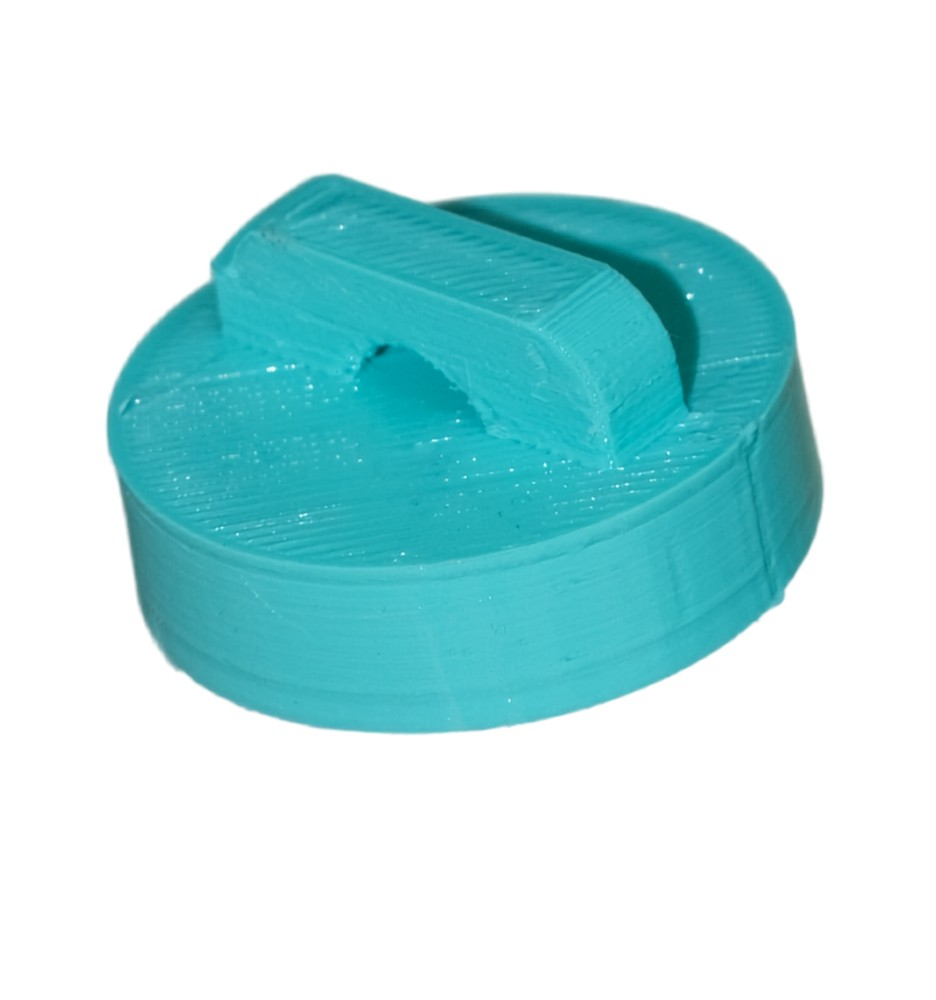
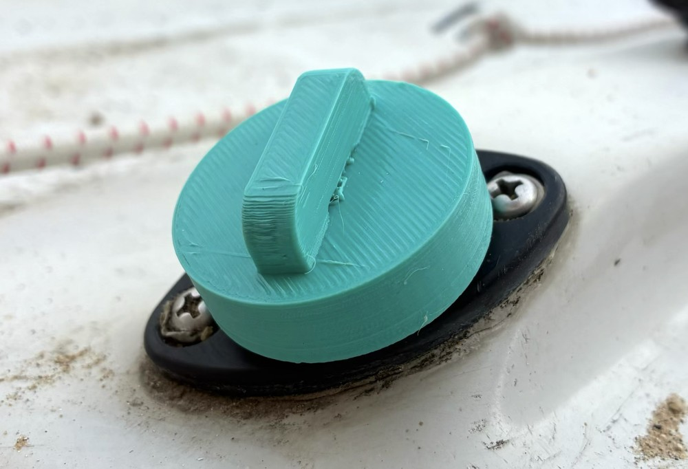
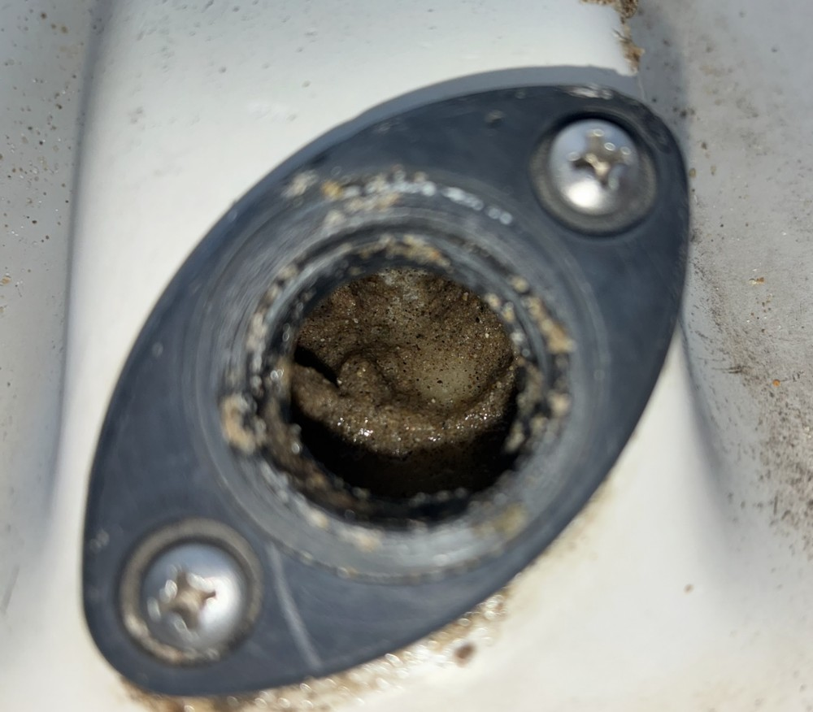
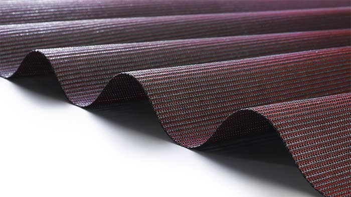
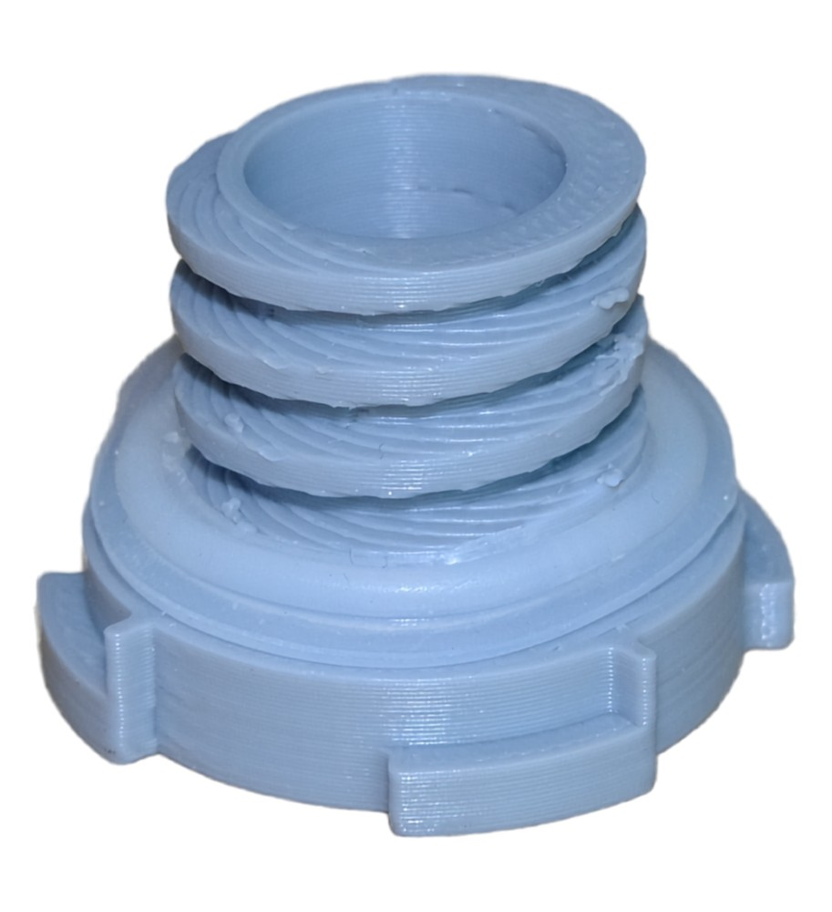
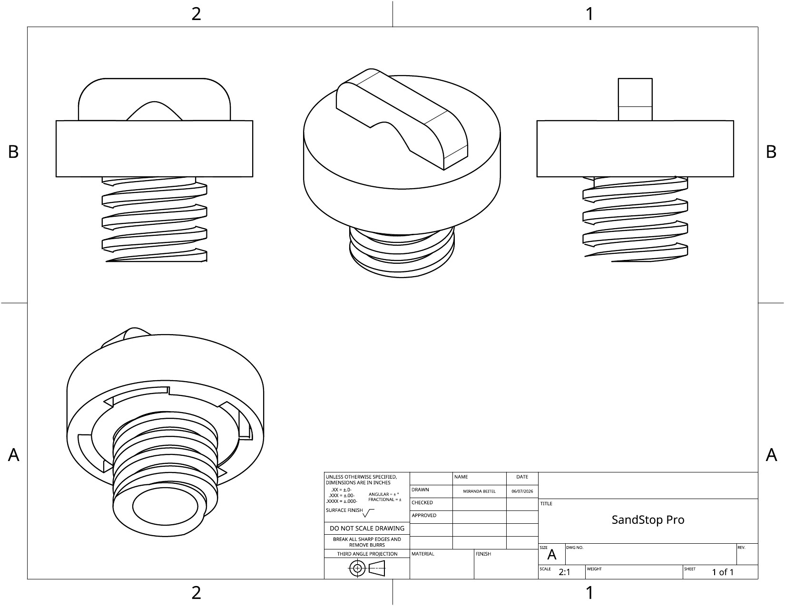

Cap
Locks on with two stages and has a tether point. Keeps water out while you sail. Made of flexible TPU.
SandStop Pro is a drain plug with a built-in filter. It blocks 98% of beach sand while water and air still pass through.
See how it works
Boats stored on beaches fill with sand through their drain plugs. That slows them down and wears them out faster.
~$700
lost per boat, every year. A 24-boat fleet loses about $16,700 a year.

SandStop Pro screws into the drain housing your boat already has.

Locks on with two stages and has a tether point. Keeps water out while you sail. Made of flexible TPU.

Mirafi RS580i fabric. It stops sand, lets moisture out and air through, and keeps hull pressure even.

Threaded, UV-resistant hard plastic. It holds the filter and stays in the boat 24/7.

Three moments in a boat's day.
Cap on, plug in. The seal is airtight, so no water enters the hull.
Cap + plugRemove the cap and plug completely. Drain water and condensation from the hull.
Cap + plug outPlug in, cap off. Sand can't get in. Moisture evaporates and hull pressure evens out overnight.
Plug only"Essentially transparent to the sailors."Captain of the Northwestern Sailing Team, after trial sailing
Slide to match your number of boats.
Based on about $696 lost per boat per year, from our Northwestern Sailing Center case study. Six years is how long a sand-logged boat lasts before replacement, versus 12 for a clean one.